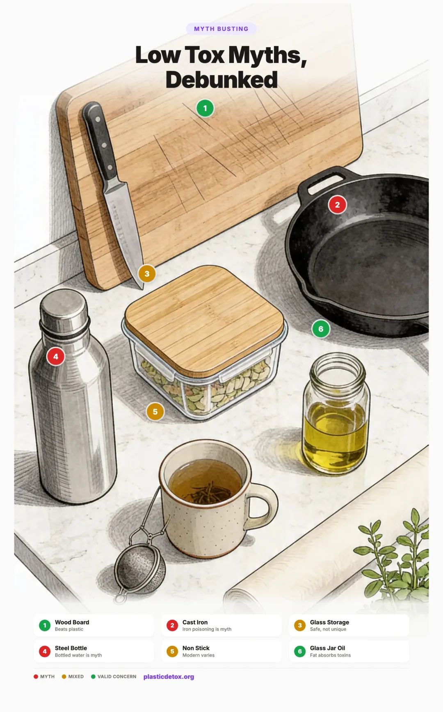

Low Tox Myths, Debunked: What Is Actually Worth Worrying About (and What Isn't)
The low tox space has a fear problem. Every week a new social media post warns that something in your kitchen, your bathroom, or your baby's nursery is silently poisoning your family. Some of those warnings are right. Many are exaggerated. A few are completely wrong.
Constant fear is exhausting, expensive, and counterproductive. When everything is dangerous, nothing is. People burn out, give up, and stop making the swaps that actually matter. This article goes through the most common low tox claims one by one, separates the science from the scaremongering, and tells you where to focus your effort for the biggest real world health benefit.

Introduction: Why Separating Fear from Science Matters for Your Family's Health
Low tox living has become a billion dollar industry, and a lot of the loudest voices online are selling something. Influencer accounts trade in screenshots of warning labels, partial study quotes, and emotional hooks. The information ecosystem rewards outrage, not nuance. The result is that sincere parents and homemakers spend money and energy on swaps that change almost nothing while leaving big real exposures untouched.
The actual evidence base for chemical exposure is messier than either side admits. Some chemicals are clearly dangerous and widely underregulated. Others are well studied and benign. Many sit in a gray zone where the dose, the timing, and the population matter enormously. A pregnant woman, a six month old, a teenager, and a healthy adult all face different risk profiles from the exact same exposure.
The goal here is not to dismiss the legitimate concerns. The goal is to let you stop worrying about the wrong things so you have energy left for the right ones.
Kitchen Myths
The kitchen is ground zero for low tox confusion. Almost every cooking surface, container, and appliance has been the subject of a viral fear post. Most of the popular kitchen warnings get the science partly right and the priority order completely wrong.
Microwaves cause cancer and destroy nutrients
The truth: Microwaves use non ionizing radiation. That is the same category as visible light and radio waves. It heats water molecules in food but it cannot damage DNA the way ionizing radiation (X rays, gamma rays, UV) can. There is no plausible biological mechanism for microwaves to cause cancer in food, and decades of safety research back this up.
On nutrients, the picture is actually flipped. Research consistently shows microwaving preserves vitamin C and antioxidants as well as or better than boiling, because shorter cooking times and less water mean less nutrient leaching. Steaming and microwaving are usually the two best home methods for retention of water soluble vitamins.
What to actually worry about: The container, not the appliance. Heating food in plastic releases significant amounts of BPA, phthalates, and microplastic particles directly into the food. Always microwave in glass or ceramic, never in plastic, even if the plastic is labeled microwave safe.
All non stick pans are toxic
The truth: The internet claim that one use of Teflon will give you cancer is overblown. The broader concern about non stick cookware is not.
The original Teflon scare came from PFOA, a chemical used in manufacturing Teflon (PTFE) until it was phased out by 2015 under the EPA PFOA Stewardship Program. PFOA is a known carcinogen and a persistent forever chemical. Pre 2015 pans used PFOA in production and should be replaced, especially if the coating is damaged.
Modern PTFE coatings no longer contain PFOA, but the replacement chemicals (GenX, PFHxA, and other short chain PFAS) have growing evidence of harm of their own and are now under increased regulatory scrutiny. "Not yet proven harmful" is not the same as safe. The PTFE coating itself is considered biologically inert at normal cooking temperatures, but the catch is what happens when you overheat it. Empty pans heated above 500F begin releasing PTFE decomposition fumes that can cause polymer fume fever in humans, a flu like illness. Scratched and chipped PTFE also flakes into food.
Ceramic and ceramic coated pans are PTFE free and a better option if you want the non stick experience. Some are excellent. Others lose their non stick properties within a year, so expect to replace them regularly.
What to actually do: We do not recommend traditional PTFE non stick for families focused on reducing plastic and chemical exposure. The precautionary case is strong, especially with babies in the house. Replace any pre 2015 Teflon immediately. For the non stick experience, use quality ceramic coated pans and replace them when they wear out. For everything else, cast iron and stainless steel remain the safest long term cookware and will outlast every non stick pan you will ever buy.
Aluminum foil and cookware cause Alzheimer's
The truth: This claim has been around since the 1960s and has been investigated extensively. The Alzheimer's Association, the World Health Organization, the UK Alzheimer's Society, and Health Canada all state there is no convincing evidence that aluminum from cookware, foil, or antiperspirants causes Alzheimer's disease. Early studies found aluminum in plaques in the brains of Alzheimer's patients, but later research showed this was likely a result of the disease, not a cause.
Aluminum does leach more from cookware when used with acidic foods like tomato sauce, lemon, vinegar, or rhubarb. The amount is small and well below safety limits, but it is the only legitimate aluminum cookware concern.
What to actually do: Use anodized aluminum (which has a sealed, non reactive surface), stainless steel, or cast iron for acidic dishes. Foil is fine for wrapping non acidic foods. If you want to be cautious, use parchment paper as a barrier between aluminum foil and acidic or hot foods.
Stainless steel leaches dangerous nickel and chromium into food
The truth: Stainless steel does leach trace amounts of nickel and chromium, particularly when cooking acidic foods or during the first few uses of new pans. The amounts are extremely small, and chromium is actually a required trace nutrient. For most people, the leaching is far below health thresholds.
The real exception is people with diagnosed nickel allergy (about 10 to 17% of women, far less in men), who can develop systemic dermatitis from dietary nickel. For those people, low nickel cookware (like 18/0 stainless steel or cast iron) is a sensible swap.
What to actually do: For most people, 18/8 or 18/10 stainless steel is one of the safest cookware options available. If you have nickel allergy symptoms (eczema, contact dermatitis, persistent rashes), switch to cast iron, glass, or 18/0 stainless steel.
Cast iron will give you iron poisoning
The truth: Cast iron does add small amounts of iron to your food, especially for acidic dishes cooked for a long time. For most people, this is a benefit, not a risk. Iron deficiency is one of the most common nutrient deficiencies in the world, especially in menstruating women, vegetarians, and young children.
The one exception: people with hereditary hemochromatosis (a genetic condition causing iron overload, affecting roughly 1 in 200 people of Northern European descent) should avoid daily cast iron use. So should men who already have very high ferritin levels. But this is a narrow medical exception, not a general cookware concern.
What to actually do: If you do not have hemochromatosis or iron overload, cast iron is one of the healthiest cookware choices you can make. Lodge cast iron skillets are widely available, last generations, and add bioavailable iron to your food.
Plastic cutting boards are worse than wooden ones
The truth: This one holds up on both axes. For chemical exposure, plastic boards are clearly worse. Yadav et al. (2023) in Environmental Science & Technology estimated that a polyethylene cutting board can shed roughly 7 to 50 grams of microplastic per person per year during chopping, depending on board material and chopping style. Wood and bamboo shed zero.
For bacterial safety, the conventional wisdom that plastic is more hygienic was never well supported. The foundational research by Cliver at UC Davis in the 1990s found wood naturally draws bacteria down into the grain where they die off, while knife scarred plastic traps bacteria in grooves where they survive washing. No credible modern study has shown plastic outperforming wood under realistic home conditions (a used, knife scarred board, hand washed). The institutional "either is fine" position rests on the theoretical cleanability of brand new smooth plastic, which stops applying the moment you use the board.
Two honest caveats: Brand new plastic does outperform heavily scored plastic, so if someone insists on plastic, replacing it frequently matters. And wood's advantage is conditional on basic care. A board that is soaked, never dried, never oiled, or visibly cracked loses its antimicrobial edge. Maintained wood beats maintained plastic. Neglected anything is bad.
What to actually do: Use wood or bamboo for everyday chopping. Oil your board occasionally and let it dry upright after washing. Keep a separate dedicated board for raw meat. See our cutting board guide for vetted picks.
BPA free automatically means safe
The truth: This one is exactly as bad as it sounds. BPA free is an unregulated marketing term that simply means the product does not contain bisphenol A specifically. Most BPA free plastics are reformulated with BPS or BPF, which research shows have nearly identical estrogenic and anti androgenic effects. This is sometimes called regrettable substitution.
In 2023, the European Food Safety Authority lowered the safe daily intake of BPA by 20,000 times based on new evidence of immune system effects at very low doses. The EU then banned BPA in food contact materials in late 2024, with an 18 month transition period for most applications (products already on shelves can still be sold through the transition). The US has not followed.
What to actually do: Stop chasing BPA free labels. Reduce plastic food contact entirely. Use glass storage containers and stainless steel where possible. Read our full BPA free deep dive.
Glass is always the safest material, period
The truth: Glass is a tier one safe material for food contact. It does not leach, it is non porous, it does not stain or absorb odors, and it lasts effectively forever. Against plastic, glass wins on essentially every metric that matters for chemical exposure.
The overgeneralization is treating glass as the only safe option. Food grade 18/8 or 18/10 stainless steel is equally inert for most uses, handles heat and impact far better, and is the safer choice for anything involving kids, hot liquids, or portability. Food grade silicone is comparable for storage bags, baking, and baby products. Lead free ceramic is fine for serving and storage. The myth is not that glass is safe, it is that glass is uniquely safe. It is not.
Glass also has real downsides outside food contact. It shatters, which makes it a poor choice around small children, in the bath, or in active sport bottles. Some imported decorative glassware has tested positive for lead in colored glazes, and vintage leaded crystal (real crystal, not modern "crystal style" glass) can leach lead if acidic liquids are decanted in it for extended periods. Glass is also heavy and energy intensive to produce, which matters for environmental footprint comparisons.
What to actually do: For home food storage, pantry jars, and kitchen containers, default to glass. For kids and on the go, use food grade stainless steel bottles or food grade silicone. For cookware, stainless steel and cast iron outperform glass on heat and durability. Skip vintage leaded crystal for any regular use, and be cautious of brightly colored imported decorative glassware without clear lead free certification.
Food and Drink Myths
Bottled water is purer than tap water
The truth: The opposite is generally true in the US. Municipal tap water is regulated under the Safe Drinking Water Act with required contaminant testing across roughly 90 regulated substances, mandatory public reporting, and third party oversight by the EPA. Bottled water is regulated as a packaged food by the FDA with looser testing requirements and no equivalent public reporting. Independent analyses have estimated that a significant portion of US bottled water, by some estimates around 25% or more, is sourced from municipal tap water, often with minimal additional filtration.
The bigger issue is that the bottle itself is a contamination source. The 2018 Mason et al. / Orb Media study tested 259 bottles from 11 brands across nine countries and found 93% contained microplastic particles. FTIR confirmed microplastics (particles over 100 microns) averaged 10.4 per liter, with an additional 325 smaller probable plastic particles per liter in the 6.5 to 100 micron range. Some individual samples exceeded 10,000 particles per liter. Heat (a hot car, a sunny warehouse shelf, a bottle left in direct sun) accelerates particle release dramatically.
What to actually do: Filter your tap water at home and carry a stainless steel bottle. For microplastic reduction specifically, look for filters certified to NSF/ANSI 401, which is the current standard that covers microplastic reduction claims. Reverse osmosis systems and high quality carbon block filters with sub micron pore size both perform well. Read our complete water filter guide.
Sea salt is safer than table salt
The truth: Sea salt is a real microplastic source, though particle intake from salt is much smaller than from water, air, or food at typical consumption levels. Kim et al. (2018) in Environmental Science & Technology tested 39 salt samples from 21 countries and found microplastics in 36 of them. Sea salt had the highest contamination, with the worst samples (Indonesian sea salt) reaching roughly 1,600 particles per kilogram. Lake salt came next. Mined rock salt was the cleanest.
The contamination is in the salt itself, not the packaging. Switching from a plastic shaker to a glass one does nothing.
What to actually do: Use mined salt instead of sea salt. Redmond Real Salt is mined from an ancient seabed in Utah and tests very low for microplastics. Himalayan pink salt from Pakistan and Celtic gray salt from old mineral deposits are also good options.
Canned foods are all lined with BPA
The truth: Most cans still have an interior plastic lining made from epoxy resin, and many do contain BPA. But the picture is shifting. Several major brands have moved to BPA free linings (which often use BPS or polyester instead, both with their own concerns). The level of leaching depends heavily on the food. Acidic foods like tomatoes and citrus leach far more than non acidic foods like beans or corn.
What to actually do: Switch the highest leaching items first: tomato products and acidic soups. Muir Glen, Rao's, and Bionaturae sell tomatoes in glass jars. For beans, Eden Foods uses a BPA free can lining. Non acidic canned vegetables (corn, peas, green beans) are lower priority.
Organic produce has zero pesticide residue
The truth: Organic produce can still contain pesticide residue, just usually at much lower levels and from a different list. Certified organic farms can use approved natural and a small list of synthetic pesticides. Pesticide drift from neighboring conventional farms also affects organic crops. Independent testing has consistently found organic produce contains pesticide residues far less often, and at lower levels, than conventional, but not zero. USDA's 2010 to 2014 organic pilot found measurable residues on around 43% of organic samples (still well below conventional rates).
So organic is meaningfully cleaner, but not residue free. The Environmental Working Group's Dirty Dozen list of conventional fruits and vegetables (strawberries, spinach, kale, grapes, peaches, etc.) is where buying organic delivers the biggest reduction.
What to actually do: Buy organic for the Dirty Dozen items where it matters. Wash all produce, organic or conventional, under running water with a soft brush. Skip organic premiums for thick skinned items like avocados, bananas, onions, and pineapples (the EWG Clean Fifteen).
Natural flavors are always a red flag
The truth: Natural flavors is one of the most opaque labels in food. The FDA defines them as flavoring derived from a plant or animal source, but the actual mixture can include dozens of ingredients including solvents, emulsifiers, preservatives, and synthetic carriers, all of which can be hidden under that two word phrase. Companies are not required to disclose the components.
That said, the actual safety risk for most people is low. Most natural flavors are conventional flavor compounds that have been used for decades. The bigger issue is principle (consumers cannot make informed choices) and the specific risk for people with allergies or sensitivities who cannot identify what they are reacting to.
What to actually do: Do not panic at every natural flavors label. But if a product you eat regularly contains it (especially in beverages or yogurts), look for a brand that lists actual flavor sources or a true unflavored option.
Personal Care and Home Myths
Every fragrance on an ingredient label means phthalates
The truth: Fragrance is a legal trade secret category that can hide hundreds of undisclosed chemicals, and historically phthalates were among the most common, especially DEP (used as a fixative to make scents linger). Independent testing in the 2010s found phthalates in roughly 75% of fragranced personal care products even when not on the label.
That has been shifting. Many major brands voluntarily removed phthalates after consumer pressure starting around 2015, and several US states (California, Washington) and the EU have banned specific phthalates in cosmetics. The FDA has not banned phthalates at the federal level, though MoCRA (2022) gave it new enforcement authority. So fragrance does not automatically mean phthalates today, but it can, and you cannot tell from the label.
What to actually do: Choose phthalate free or fragrance free products for items that stay on your skin (lotions, deodorants, perfumes). Look for the words phthalate free, EWG Verified, or MADE SAFE certified. Brands like Beautycounter, Honest Company, and Native are widely available and avoid undisclosed phthalates.
Parabens cause breast cancer
The truth: The breast cancer connection comes from a small 2004 study that found parabens in breast tumor tissue. The study did not show parabens caused the tumors, only that they were present, and the same study would have found them in healthy tissue too if tested. Parabens are very weakly estrogenic (10,000 to 1,000,000 times weaker than the body's own estrogen, depending on the specific paraben).
The American Cancer Society, FDA, and NIH all state current evidence does not show parabens cause cancer. Multiple large reviews have not found a population level link.
That said, parabens are easy to avoid because most major brands now offer paraben free formulas, so there is no real reason to keep them in your routine if you would rather not.
What to actually do: If a paraben free option is available at the same price, choose it. But do not stress about old products you have, and do not let paraben fear push you toward worse alternatives (some paraben replacements like methylisothiazolinone cause significant skin allergies in many people).
Thermal paper receipts are a real BPA exposure route
The truth: Most thermal paper receipts (the shiny kind from registers, ATMs, gas pumps, and parking meters) are coated with BPA or its substitute BPS as a developer. Studies have measured 5 to 30 milligrams of free bisphenol per receipt, sitting unbound on the paper surface. Skin absorbs it readily, especially when fingers are moist or when hand sanitizer or lotion is on the skin (these solvents dramatically increase dermal uptake). Cashiers who handle receipts all day have measurably higher urinary BPA levels than the general population.
This is a meaningful exposure route, and it gets very little attention compared to plastic water bottles or canned food. The dermal absorption is fast and goes straight into the bloodstream, bypassing the liver's first pass detox.
What to actually do: Decline paper receipts when you can. Ask for digital or email receipts. If you do take one, fold it print side in and wash your hands before eating. Never handle thermal receipts right after applying hand sanitizer or lotion. Cashiers and bank tellers should consider gloves for thermal paper handling.
Sunscreen is more dangerous than sun exposure
The truth: As an absolute claim, this is wrong and can be actively harmful. UV exposure is the single biggest preventable cause of skin cancer, skin cancer kills over 8,000 Americans every year, and the protective benefit of mineral sunscreen far outweighs the risk of any approved ingredient. Someone who spends hours at the beach or years working outdoors without protection is taking a real risk, and no concern about sunscreen ingredients changes that math.
That said, the conversation is more nuanced than "always wear sunscreen, always, everywhere." A large Swedish cohort study following roughly 30,000 women for 20 years found that sun avoidant women had approximately double the all cause mortality of the highest sun exposure group, and the authors suggested sun avoidance should be viewed as a health risk comparable to smoking. Moderate sun exposure is associated with lower rates of cardiovascular disease, hypertension, and some autoimmune conditions. Vitamin D, which the body synthesizes from UVB, is genuinely difficult to obtain in adequate amounts from food alone, and serum levels correlate with outcomes across many disease categories.
The legitimate sunscreen concern is which sunscreen. Some older chemical filters (oxybenzone, octinoxate) are absorbed through skin in measurable amounts, have hormonal activity in lab studies, and have been detected in breast milk and blood. Hawaii, Key West, and other places have banned them for coral reef protection. Mineral filters (zinc oxide, titanium dioxide) sit on top of the skin and have a much better safety profile.
What to actually do: The sensible middle path is sun protection matched to actual exposure. Short, unprotected exposure to soft morning or late afternoon sun, ideally on a meaningful amount of skin, supports vitamin D synthesis with low burn risk. Extended midday exposure, any exposure for fair skinned people or children, and any exposure likely to cause pinkness or burning should be protected with mineral sunscreen, shade, or clothing. Burns, especially blistering childhood burns, are the skin cancer risk you most want to avoid. A daily sunscreen habit on face, neck, and hands makes sense for most people; full body sunscreen every time you step outside is probably more than the evidence supports. Consider vitamin D testing and supplementation if you are dark skinned at northern latitudes, rarely outdoors, always covered, or over 65. Read our full mineral sunscreen guide for vetted picks.
Essential oils are a safe, non toxic alternative to everything
The truth: Essential oils are highly concentrated plant extracts. Natural is not a synonym for harmless. Case reports and in vitro studies have linked tea tree oil and lavender to hormone disruption and gynecomastia (breast development) in young boys with prolonged exposure, though the link is debated and not universally accepted in endocrinology. Cinnamon, clove, oregano, and citrus oils are skin sensitizers that can cause severe allergic reactions. Many essential oils are toxic to cats, who lack the liver enzymes to metabolize them. Several are toxic to dogs and birds. Diffusing strongly scented oils in a closed space affects indoor air quality just like synthetic fragrances do.
Used carefully and properly diluted, essential oils are fine for most adults. The myth is the all natural means safe framing.
What to actually do: Dilute essential oils properly (typically 1 to 3% in a carrier oil for skin use). Avoid diffusing around babies, young children, pets, and people with asthma. Do not apply citrus oils before sun exposure. Treat them like any other potent active ingredient, not like water.
Everything with a Prop 65 warning will give you cancer
The truth: California's Proposition 65 requires warning labels on products containing any of about 900 listed chemicals known to cause cancer, birth defects, or reproductive harm. The law has done real good. It has pushed manufacturers to reformulate. But the threshold for warnings is set extremely low (the chemical must pose a risk above 1 in 100,000 over a lifetime of exposure), so warning labels appear on coffee, parking garages, restaurants, hardware stores, and almost every imported product.
This means a Prop 65 warning is real information but not a useful risk signal on its own. The presence of a label does not tell you whether the actual exposure from that specific product is meaningful. Some Prop 65 listed chemicals (lead, asbestos, formaldehyde, certain phthalates) are genuinely high risk. Others appear at trace levels in things you would never worry about.
What to actually do: Treat Prop 65 as a prompt to look up the specific chemical, not a verdict. The OEHHA website lists every chemical and its known risks. For everyday products like cosmetics, cookware, and children's items, prefer brands that meet stricter EU standards which often catch more concerning chemicals than US rules.
Scented candles are as bad as smoking
The truth: Not at the same intensity as actively smoking a cigarette, but the comparison is not entirely marketing scare either. Paraffin candles release benzene, toluene, and ultrafine particulate matter (PM2.5) when burned. Heavily fragranced candles emit phthalates and a complex mix of VOCs that lower indoor air quality measurably.
An EPA study found that burning candles in a closed room can elevate PM2.5 to levels comparable to a smoky restaurant. One candle for one hour is small. Burning multiple paraffin candles daily in a closed bedroom is a real and entirely avoidable indoor air problem.
What to actually do: Switch to unscented or essential oil scented beeswax or coconut wax candles with cotton wicks. Burn them in a ventilated space, not in a closed bedroom. Use sparingly. For ambient scent, simmer pots (water with cinnamon, citrus peel, herbs) on the stove are an alternative with no air quality cost.
Baby and Parenting Myths
Parents get the most aggressive low tox marketing of anyone, and the most contradictory advice. Babies are genuinely more vulnerable to certain exposures, but they are also resilient little humans. Here is where to actually focus.
All baby plastic toys leach hormone disruptors
The truth: Hard plastic toys (LEGO, hard ABS toys, polypropylene rattles) at room temperature, in a baby's hand for short periods, leach very little. Soft PVC toys are a different story. PVC needs phthalates to be flexible, and those phthalates leach into a baby's mouth when chewed. The US banned six phthalates in children's toys and child care articles in 2008, but imported and older toys can still contain them.
The bigger plastic exposure for infants is feeding, not toys. Polypropylene baby bottles release millions of microplastic particles per liter of formula when sterilized and warmed.
What to actually do: Hard plastic toys are fine. Avoid soft, squishy, cheap imported plastic toys, especially if babies are mouthing them. Choose silicone, wood, or fabric teethers. Prioritize fixing the bottle and food storage situation first. See our full baby and toddler guide.
Silicone is just another plastic
The truth: Silicone is a synthetic polymer made primarily from silica (sand and oxygen), not from petroleum like conventional plastics. Food grade and medical grade silicone is heat stable up to 400 to 500F, does not contain BPA or phthalates, and has been used safely in medical implants and infant feeding products for decades. The FDA classifies food grade silicone as Generally Recognized As Safe.
The caveat is quality. Lower grade silicone (some cheap kitchen tools, novelty items) can release small amounts of siloxanes when heated. The pinch test (pinch and twist a silicone product, if white shows through, it likely contains plastic fillers) helps identify lower quality items.
What to actually do: For baby bottles, baking, food storage, and reusable bags, food grade silicone is one of the safest non glass options. Stasher bags and reputable silicone baby products are excellent choices.
Bamboo and eco tableware is always the safer choice
The truth: Solid bamboo (a single piece carved from bamboo, like cutting boards or utensils) is great. Bamboo composite tableware is the problem. The colorful bamboo plates, cups, and toddler dishes marketed as eco friendly are usually bamboo fiber held together with melamine resin. When heated (microwave, hot food, dishwasher), they can release melamine and formaldehyde into food. The EU has issued multiple recalls of bamboo melamine products since 2020, and several countries have banned them outright.
What to actually do: Look at the ingredient list. If a bamboo product contains melamine or melamine resin, do not use it for hot food. For toddler dishes, choose 100% silicone (ezpz silicone mats and bowls) or stainless steel (Ahimsa Stainless Steel) instead.
You need to detox your baby from birth
The truth: Babies are not toxic. Detox protocols, supplements, and regimens marketed for infants are at best unnecessary and at worst dangerous. A baby's liver, kidneys, and skin are designed to handle normal environmental exposures, and the vast majority of healthy babies do this just fine. There is no medical evidence that infants need or benefit from detox products.
The legitimate concern, which is real, is reducing the exposures babies face in the first place. Prenatal exposure (what mom encounters during pregnancy) and the first three years are critical developmental windows. So the focus should be on prevention, not on detoxing after the fact.
What to actually do: Skip baby detox products. Focus on the high impact prevention basics: filtered water, glass bottles for formula, no plastic in the microwave, mineral sunscreen, fragrance free baby skincare, and good ventilation in the nursery. See our complete non toxic baby guide.
Bigger Picture Myths
Cumulative low dose exposure matters more than any single product
The truth: Most low tox conversation focuses on single product exposure (this lipstick has X, this can has Y). That framing misses the actual public health story, which is the cumulative low dose mixture of dozens of chemicals across food, water, air, and skin every day, plus the specific timing of exposure during developmental windows.
A pregnant woman, a fetus, an infant, and a toddler are measurably more sensitive to endocrine disruptors than a healthy adult. Trasande et al. (Andrology, 2016) estimated the median annual cost of endocrine disruptor related disease in the EU at roughly 163 billion euros, with the largest contributors being prenatal and early childhood exposures. Single product testing routinely misses this kind of cumulative, developmental picture because it evaluates one chemical at a time at adult doses, not combined chemicals at the doses that actually matter for a 16 week fetus.
None of this means the individual products are dangerous on their own. It means the important question is not "is this one thing bad?" but "what does my household's overall exposure look like, and when does timing matter most?"
What to actually do: If you are pregnant, planning pregnancy, or have young children, prioritize. The same exposures that are minor for a healthy 40 year old can matter much more for a 16 week fetus. The good news is the same high impact swaps protect both groups: filter your water, reduce plastic food contact, avoid fragrance during pregnancy, and skip the highest leaching foods (canned tomatoes, receipt paper, scented personal care). You do not need to chase every Instagram fear post. You need the structural fixes in place during the windows that matter most.
Going fully plastic free is realistic for most families
The truth: No, it is not, and chasing it will burn you out. Plastic is in food packaging, clothing, electronics, medical devices, transportation, and the dust in your house. Going completely plastic free as a single household is functionally impossible without massive lifestyle reorganization that most people cannot sustain.
The good news is that you do not need to be plastic free to dramatically reduce your exposure. The 80/20 rule applies hard here. A handful of high impact swaps (water filter, glass food storage, no microwaving plastic, mineral sunscreen, fragrance free personal care) eliminates the majority of measurable exposure for the average household.
What to actually do: Stop aiming for zero. Aim for high impact reductions you can sustain. Our priority guide walks through the highest leverage swaps in order.
If it is sold in the US, it must be safe
The truth: The US uses an innocent until proven guilty model for chemicals. Manufacturers can use a chemical until specific harm is documented, and even then removal is slow. The Toxic Substances Control Act of 1976 grandfathered in roughly 62,000 chemicals without safety testing. The FDA has only banned about a dozen ingredients from cosmetics. The EU has banned over 1,300.
The EU and parts of Canada use a precautionary principle (chemicals must be shown safe before approval), which is why many products sold in the US are reformulated when sold in Europe. Multinational brands often sell different formulations in different markets for the same product.
What to actually do: US regulation is not a safety guarantee. For categories with the biggest gap (cosmetics, food packaging, cleaning products), look for EU compliance, MADE SAFE certification, EWG Verified, or third party testing. Brands that test and disclose are more trustworthy than brands that simply meet US minimums.
The Real Priorities, Ranked by Actual Evidence
If you take nothing else from this article, take this list. These are the swaps and habits that have the strongest evidence behind them, ordered from biggest impact to smallest. Work down the list. Do not jump ahead to the cosmetic stuff before the structural stuff is in place.
What you do not see on this list: chasing every Instagram fear post, replacing every parabens product overnight, or trying to go zero plastic. The evidence does not support those as priorities. The five tiers above will take care of the vast majority of your real exposure.
FAQ
No. Microwaves use non ionizing radiation, which heats water molecules but cannot damage DNA the way ionizing radiation (X rays, UV) can. Microwaving actually preserves more vitamins than boiling because cooking time is shorter and less water is used. The real microwave concern is the container. Heating food in plastic releases significant chemicals into the food. Always microwave in glass or ceramic.
The internet claim that one use of Teflon will give you cancer is overblown, but the broader concern is not. PFOA, used in manufacturing Teflon (PTFE), was phased out by 2015 and is a known carcinogen. Pre 2015 pans should be replaced immediately. Modern PTFE uses replacement chemicals like GenX and PFHxA, which have growing evidence of harm. PTFE itself is inert at normal heat but releases decomposition fumes above 500F that cause polymer fume fever. Ceramic coated pans are PTFE free and a better non stick option. Cast iron and stainless steel remain the safest long term cookware.
No convincing evidence supports this. The Alzheimer's Association, the WHO, and the UK Alzheimer's Society all state aluminum from cookware or foil does not cause Alzheimer's. Aluminum does leach more from cookware when used with acidic foods, so anodized or stainless steel is preferred for tomato sauces and citrus dishes.
Often no. BPA free typically means the manufacturer replaced bisphenol A with BPS or BPF, which research shows have similar endocrine disrupting effects. The European Food Safety Authority lowered the safe daily intake of BPA by 20,000 times in 2023. The safest path is to reduce plastic food contact entirely rather than to chase BPA free labels.
Parabens are weakly estrogenic and have been found in breast tumor tissue, but no causal link to breast cancer has been established. The FDA, NIH, and American Cancer Society all state current evidence does not show parabens cause cancer. They are easy to avoid since most major personal care brands now offer paraben free formulas.
As an absolute claim, no. Skin cancer kills over 8,000 Americans every year, and mineral sunscreen is clearly protective. But the nuance matters: moderate sun exposure is associated with vitamin D synthesis and lower all cause mortality in large cohort studies, and total sun avoidance carries its own health costs. The sensible approach is sun protection matched to actual exposure. Use mineral sunscreen (zinc oxide, titanium dioxide) for extended or intense exposure, and allow short unprotected time in soft morning or late afternoon sun for vitamin D.
Not at the same level, but the comparison is not pure marketing scare. Paraffin candles release benzene, toluene, and ultrafine particulate matter when burned. Heavily fragranced candles emit phthalates and VOCs that lower indoor air quality. Daily use of multiple paraffin candles in a closed room is a real and avoidable indoor air problem. Switch to unscented or essential oil scented beeswax or coconut wax candles.
No. Silicone is a synthetic polymer made from silica (sand), not from petroleum. Food grade and medical grade silicone is heat stable, does not leach BPA or phthalates, and is approved by the FDA for food contact. For storage, baking, and baby products, food grade silicone is one of the safest non glass options.
It means the product contains one of about 900 chemicals on California's list of substances known to cause cancer, birth defects, or reproductive harm. The warning threshold is set very low, so labels appear on coffee, restaurants, and most imported products. A Prop 65 warning is real information but not a useful risk signal on its own. Look up the specific chemical involved if you want to assess the actual exposure.
Filter your tap water with a pitcher certified for microplastic and PFAS reduction, and carry a stainless steel bottle. Water is the single biggest controllable exposure for most US households, and a single $30 to $70 purchase changes that overnight.
Related Articles
- How to Start Reducing Plastic Exposure: A Practical Priority Guide (2026)
A step by step framework for reducing microplastic exposure, starting with what matters most. - BPA Free Is Not Safe: What Replaces BPA and Why It Matters (2026)
A close look at why BPA free labels often hide BPS and BPF, two chemicals just as harmful. - Plastic in Groceries: What Really Matters and What You Can Stop Worrying About (2026)
Which foods actually absorb chemicals from packaging and which are safe in plastic. - Toxic Kitchen Appliances, Ranked by Leaching Risk
Beyond the myths: a science backed ranking of which kitchen appliances actually leach chemicals into food. - Cast Iron vs. Stainless Steel vs. Ceramic Cookware (2026)
A complete comparison of the safest non toxic cookware options. - Best Mineral Sunscreen Guide (2026)
Vetted zinc oxide and titanium dioxide picks that actually feel good to wear. - Non Toxic Baby and Toddler Products Guide (2026)
The full setup for the safest feeding, bathing, sleeping, and playing essentials.